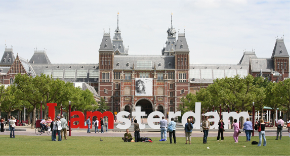
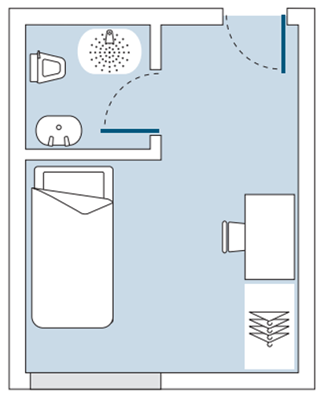

STUDY ABROAD
Norwich, Great Britain
Norwich, Great Britain
Amsterdam - the capital city and most populous region in the Netherlands.
Most Americans can’t even point to it on a map yet they somehow know it as “the place where you smoke pot”. If you are really interested in the legality of the situation Frida Ghitis wrote a great article on CNN Travel that explains the history and true facts in great detail. Its not a free for all, hippie home, like most Americans think.
Most people travel to Amsterdam because of its beautiful canals, museums, architecture and way of life. This is part of the reason I will be in the city twice or more. Did you know Amsterdam is home to the Anne Frank House, the Van Gogh Museum, the Rijksmuseum and several architectural marvels? In the surrounding areas of Amsterdam such as Rotterdam and The Hague lie similar cities of equal beauty. The Netherlands is also famous for extraordinary graphic design and design in general. 
I finally received an offer of accommodation on campus. I will be living in Constable Terrace on the UEA main campus next to the Sainsbury. The room is somewhat small but what college dorm isn't? At least I have my own bathroom and shower! 
When entering the UK to study there are two types of visas to consider, a Student Visitor Visa and Tier4. The main difference between these documents is that a Student Visitor does not allow you to work or volunteer and you can only be in the country for six months. A Tier4 Visa allows you to work or volunteer plus you can stay in the country for a longer period of time. In order to get a Tier4 Visa you have to notify your study abroad university so they can issue a CAS document. This document basically states you are a student and declares your length of education. A Student Visitor Visa has no cost and can be obtained at port of entry, however, a Tier4 Visa has to be obtained before you enter the country and costs nearly $600.
All study abroad students at a University of Missouri school has to enroll in HTH Worldwide health insurance. You only pay for the months you are not in the United States. For me that will be four months so my total was $129. We also had to sign up for Frontier MEDEX which gives basic help in times of need such as a translator, help with money, if a natural disaster occurs, mandatory evacuations, etc.. This service is no cost to the student and mandated through the university.
The joys of traveling. Most people who have never significantly been away from the United States for an extended period of time often do not understand the idea of "Culture Shock". Below is a list of the stages a person faces when staying abroad for anything length of time.
In the UK you are required to purchase a TV license before you watch any live broadcast even if it is online or transmitted directly to your TV. How much is a one year license? £145.50 for colour. That is roughly $248 a year!
See the UK TV license yourself.
Social Media